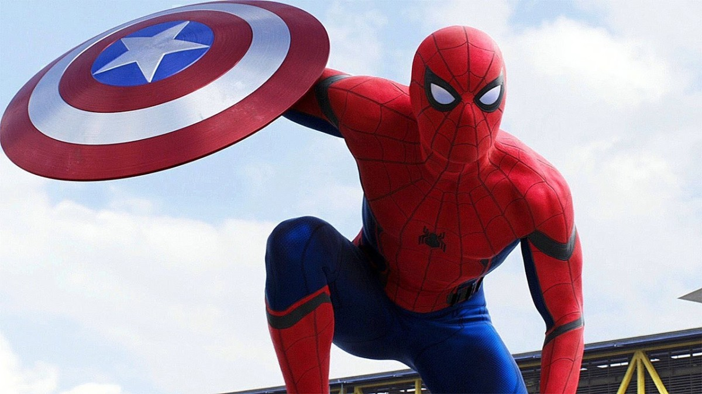

About Spiderman
He is awesome! He is a friendly neighbourhood spiderman who tries his best at saving the world, one swing at a time.
Spiderman in Action
Spiderman's Characteristics
- He swings
- He shoots webs
- He is strong
Spiderman's Friends
Spiderman is friends with Tony Stark, has an Aunt May, and is together with MJ, and Ned has his back as well. Click on the links below to find out more about them.